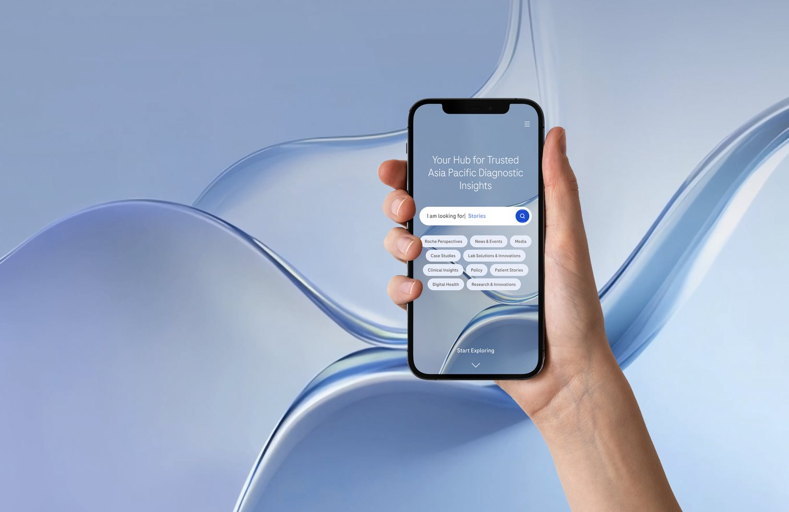
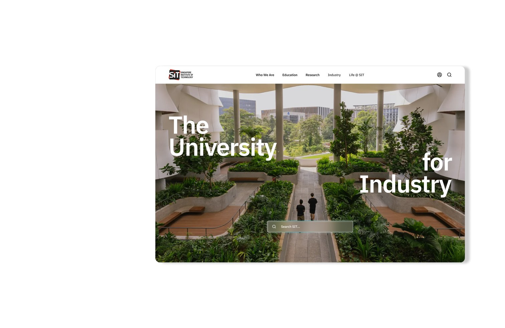

Case
Studies
Each project shows how I approach Research, Problem-solving & Design

A Diagnostics
Knowledge Platform
Turning hidden content into a platform that’s discoverable, trusted, and built to convert.
View case study
SIT
Website
Giving SIT’s website the structure, proof and clarity its 2034 ambition demanded.
View case study